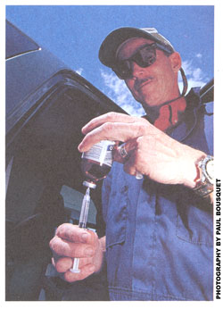
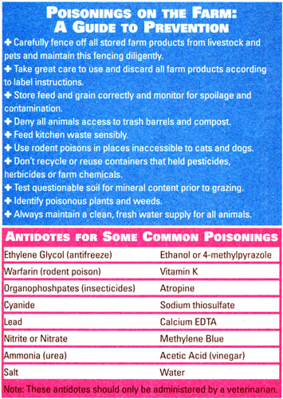
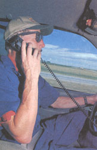

COUNTRY VET
A long day continues...
When last we left our country vet, he'd spent the morning ministering to to poisoned cows, goats, horses and pigs, and was racing toward the Caulfield Ranch to see about a sick dog...
12:30 P.M.
Colorado is known for its dry weather and today was no exception. I raced up the lane to the Caulfield Ranch, a plume of dust shadowing my truck. It overtook me just as I stepped out of the cab and noticed Bill Caulfield running up to greet me.
"Dr. Jon, thanks for coming on short notice. Sam is in the barn."
"When did he get sick?" I asked.
"Well, Sam always likes to ride on top of the hay bales when we bring them in. But this morning we noticed he didn't follow us out to the field. When I brought the first load into the barn, I found Sam more or less collapsed."
Sam was laid out on his side, breathing hard and fast. I checked his gums and found them a pale gray. Clearly, he was a very sick guy. I rolled Sam over onto his back, his abdomen appeared bloated and looked as if it was full of fluid. His heart was racing, and his pulse was weak-a sign of decreased blood volume. The heart was compensating for the loss of blood by pumping faster Sam was probably bleeding into his abdomen. I carefully inserted a 22-gauge needle into his abdomen, pulled back on the syringe and watched it fill with dark, red blood. It was time for action.
"Bill, you have some other dogs, don't you?"
"Sure, we have three other border collies."
"I need the biggest one of the bunch over here right now."
I didn't need to do any blood tests to know that Sam was gravely anemic. Fortunately, because he was bleeding into his abdomen, he was able to reabsorb some of the oxygen-carrying red cells.
My brain tends to shut down at times, which is why I bring my diagnostic software with me to help home in on the diagnosis. I grabbed my laptop from the truck and immediately noticed there was some congealed blood between the E and R on the keyboard, probably from one of the vials of blood I'd drawn from Helga Volkman's pigs. As I was about to pull up a list of causes of internal bleeding, it struck me that in veterinary medicine answers are often staring you in the face; you only need to open your eyes to see them. Sam's blood wasn't congealing properly.
Warfarin toxicity is the most common poisoning among dogs and cats. It occurs when animals ingest rodent poison containing warfarin or brodifacoum, or when they eat poisoned rodents.
Warfarin is an anticoagulant that interferes with the normal clotting of blood. It has a delayed effect, and a dog or cat that ingests an anticoagulant rodent poison may not show signs for two to ten days, depending on the half-life of the anticoagulant in the poison. Newer second-generation products such as D-Con Mouse Pruf II or Havoc are more potent, requiring a smaller dose to cause toxicity. Bill confirmed that some second-generation D-Con had been put out a week ago.
Bill brought over another border collie named Tess, who looked healthy enough. I clipped up her neck, gave it a few surgical scrubs and pulled about 150 ccs of blood. Immediately, I injected the transfused blood into a catheter in Sam's leg. Ideally, this blood would be given through a filtering system to remove any clots, but in this setting we had to improvise.
The blood transfusion gave Sam some clotting factors and red cells that he dearly needed, but he still required the antidote for warfarin poisoning: vitamin K. Vitamin K is an essential catalyst in the clotting process. Warfarin and other anticoagulants interfere with the action of vitamin K, preventing normal clotting and leading to spontaneous bleeding into body cavities.
If Sam survived the next 24 hours, there was a good chance he would be fine. The vitamin K would be given as an oral medication for the next two weeks. After dispensing the necessary capsules, I turned to Bill and said, "Here, let me write a prescription that may help with this problem in the future."
It read: Rx-One cat, adept at catching rodents. Refill as needed.
I got back in my truck, avidly anticipating a bite of lunch at the cafe down by the highway, perhaps followed by a short nap. But a check of my voice mail cured me of that notion: The Millers had a llama that had been down since this morning.
2:15 P.M.
The sick llama's name was Dolly, and I found her lying on her side next to the barn. She was salivating profusely, her pupils were very small and her heart rate was surprisingly slow. She was humming, as all llamas occasionally do, but clearly in a distressed sort of way.
"Doc, we found some lice on her yesterday and sprayed her with a solution they gave us at the feed store. Here's the container," Bill Miller explained, handing me a partly empty plastic spray bottle.
Dolly had been spritzed with chlorpyrifos an organophosphate compound. Organophosphates work exquisitely well to kill parasites of many types by interfering with nerve transmission, causing paralysis. When used carefully at the correct dose, they are safe for most livestock and pets. But as with other insecticides and pesticides, some individual animals are more sensitive. Llamas are particularly susceptible because owners frequently overestimate their weight and consequently overdose them.
All of Dolly's signs suggested organophosphate toxicity. Fortunately, there is a good antidote called atropine. Atropine blocks the effects of organophosphates at nerve junctions, so I gave Dolly an injection under her skin and left several more doses for the Millers to administer every five to six hours until Dolly was acting normally. Organophoshphate toxicity is completely reversible when treated correctly.
While we were waiting for the atropine to take effect, the Millers couldn't resist showing me some pictures of Dolly when she was a baby, or crea. When you work with llama owners, this is the sort of thing you come to expect.
By the time I had loaded up my supplies, the llama's pupils had dilated somewhat and she was salivating less. She was going to be fine. As I was pulling out from the Millers' barn, Bill Miller yelled out, "Hey Doc, why do llamas hum, anyway?"
"That's an easy one," I shouted back over the hum of the truck engine. "Because they don't know the words."
My mind shifted gears as I headed up the long hill leaving the Millers' place. I tried to recall, from my vet school years, the three principles of treatment for poisonings: 1) prevent further absorption, 2) provide supportive care and 3) provide an antidote, when known.
If you catch the poisoning within the first few hours, you can prevent further absorption by inducing vomiting. A few teaspoons of hydrogen peroxide or syrup of ipecac (10 to 20 milliliters in dogs) is usually sufficient. Note, however, that only dogs, cats and pigs are capable of vomiting.
If a toxin is absorbed through the skin, clipping the hair or wool and a soap and water scrub may do the trick.
With ruminants or horses, a stomach tube can be placed and the stomach flushed out using a hand pump and water. Placing a stomach tube in a ruminant or a dog is a fairly straightforward procedure (see " How to Place a Stomach Tube" ) . For horses, a veterinarian is required to sedate the animal and place the tube via its nasal passage.
One to two ounces of activated charcoal for every ten pounds of body weight can be given orally to absorb toxins along the gastrointestinal (GI) tract. The charcoal slurry is ideally given through a stomach tube but can also he given directly into the mouth. In the case of a valuable ruminant, owners may opt to have the animal's GI tract Surgically emptied of toxins.
Regardless, supportive care is needed until the animal can metabolize or excrete the poison. Depending on the condition of the animal, intravenous fluids, transfusions, antibiotics, pain medications, antiinflammatories or anticonvulsants may be required.
When an antidote is known or available, it is given once the animal is stabilized. (Antidotes for some common poisonings are listed in the box above.) Snaking along the Cache La Poudre River, my mind occupied with these tortuous academic meanderings, I suddenly realized that I was less than a quarter mile from the Schmidt place, my next stop.
3:30 P.M.
The thunderous blast of a double-barreled shotgun made me swerve as I skidded to a stop outside the Schmidts' house.
"Hey, Doc, want to give it a try?" Lance Schmidt and his son Forrest were standing proudly next to their new skeet launcher. Shards of clay pigeons lay scattered throughout the barnyard. Three turkeys lay motionless over by a fence. I eyed the Schmidts suspiciously.
"Doc, for God's sake, we didn't kill the turkeys! We found them after lunch-already dead. That's why we called you. We were just working on our marksmanship while we waited."
I was in need of some entertainment, so I grabbed the shotgun and took a few tries at blasting several skeet to oblivion. After several fruitless attempts, I actually managed to hit one of them. As the clay pieces rained down, I noticed a few of the Schmidts' hogs ambling over to investigate them.
"Lance, those clay pigeons will kill your pigs as dead as those turkeys!"
I'd recently read of a case where a pig died after eating just 15 grams of clay pigeons over a five-day period. As it turns out, clay pigeons contain coal tar, a deadly farm chemical also found in treated wood and tar paper. Sows kept in far rowing crates that are treated with creosote often have stillborn piglets and tend to do poorly overall, as do pigs raised on wood floor slabs that have been treated with lignite pitch.
While the Schmidts shooed the pigs away from the clay, I walked over to the turkeys. They'd been the only three on the farm, so there was less urgency in diagnosing the problem. I needed to do a necropsy (post-mortem) on one of the turkeys, so I could submit the tissues to a pathology lab. I noticed that all three turkeys appeared to have swollen faces. As I meticulously dissected out samples of each organ, I quizzed the Schmidts on any possible clues to the turkeys' demise.
Several days ago, the Schmidts had thoroughly disinfected the turkeys' feeders and waterers with quaternary ammonia. A common and effective disinfectant, quaternary ammonia is generally tolerated in small amounts by most farm animals.
I told the Schmidts I needed to look up some information, then returned to my truck and quickly thumbed through my well-used Merck Manual (Merck & Co., 1991). There it was, in the section on poultry: "Turkeys are extremely sensitive to quaternary ammonia ... necropsy lesions include caseous ulcers at the base of the tongue."
Caseous means cheese-like, and I momentarily found myself thinking ahead to the ravioli supper that would be waiting for me back home. My stomach grumbled, reminding of the lunch I'd missed. I jolted back to reality as Forrest Schmidt blasted another clay pigeon from nearby.
With my ears ringing, I checked the oral cavities of all three turkeys, and found that two of them had an olivesized swelling at the base of their tongues. When I cut into one, there was a thick, yellowish material, not unlike melted provolone cheese. It appeared we had our diagnosis.
I bagged the tissue samples and tossed them on the floor of the cab. My pager was buzzing again, and I recognized the phone number of the Vee-Bar Ranch.
5:40 P.M.
The Vee-Bar is a dude ranch run by the Nelsons. I pulled up to find Tim Nelson in the shop, working on his tractor. It turns out one of their friendly barn cats had been staggering and falling down. The Nelsons wanted to do anything required to help him.
The cat, Toby, was a young neutered male, around two, who was current on his rabies shot. When he tried to walk, he would sway drunkenly. He had a glazed look in his eyes and did not seem responsive to his surroundings.
"Tim, when did you first notice him doing this?" I asked.
"Well, my wife went out to feed him this morning and he fell over when he tried to walk. Do you think he could have gotten into something?"
"Do your cats have access to this shop area?" I asked.
"Sure, we don't restrict them at all. They help keep down the mice population."
I only needed to look down at the puddle on the concrete floor to know what had happened. One to two teaspoons of sweet smelling antifreeze will make a cat critically ill. Initially, it will act as if it's drunk, then will go into kidney failure. Ethylene glycol, an active ingredient in antifreeze, is transformed by the liver and kidneys into toxic by-products that are potentially lethal to all animals. I've seen dogs, pigs, poultry and cattle all poisoned by antifreeze at one time or another. in cats, there was only one antidote.
"Tim, what kind of liquor do you have?"
"Doc, don't you think you better deal with Toby, here, first?" Tim replied, not a little incredulous.
"Do you have any vodka?"
"Sure, but..."
"Quick, bring me a bottle. We need to help Toby, and fast."
While Tim was getting the alcohol, I placed a catheter in Toby's front leg and started running some IV fluids. It was too late to induce vomiting or to try to reabsorb the antifreeze. The ethylene glycol in the antifreeze had supercharged his blood, making it highly concentrated. As with many toxicities, "dilution is the solution to pollution."
I checked my formulary, then added 107ccs of 100-proof vodka to a liter of standard IV solution, to make a 7% ethanol solution (do not try this at home). Ethanol will block the metabolism of ethylene glycol, causing it to be excreted, unchanged, in the urine.
I started running the ethanol solution into Toby's veins and told Tim that he would have to watch carefully for catheter problems. I showed him how to flush and maintain the catheter, and he assured me the family would take shifts watching Toby throughout the night. if the cat did well for 24 hours, blood tests would tell how much permanent damage had been done to the kidneys.
"Hey, Doc, take some of this with you!" Tim cried out, as I settled into my truck.
It was some of the Vee-Bar's home brew; I had tried it before and it was tasty. Recharged with anticipation, I goosed the truck down the gravel road. Finally, it was time to head home.
My last call of the day was from my wife, received on my cell phone as I left the Vee-Bar. Our Malamute, Bruiser, had eaten an entire plate of chocolate chip cookies. We did the math together: A toxic dose of theobromine, the primary ingredient in chocolate, is 20 milligrams per kilogram. Since Bruiser weighed 30 kilograms, he would need to consume about 600 milligrams of theobromine to get sick; ten times that would probably be fatal (although it is never all that nifty an idea to give your animals chocolate at all). Milk chocolate contains 44 milligrams of theobromine per ounce, while baker's chocolate contains 450 milligrams an ounce.
There were about ten ounces of milkchocolate chips in the cookies, or about 440 milligrams of theobromine. That was comfortably less then the toxic dose, but possibly enough to cause some discomfort. Early signs of mild poisoning include diarrhea and vomiting.
"Hon, you might want to put him outside in case he has any problems." The silence on the other end told me my advice was too late.
My wife finally said: "Oh, by the way, he also pulled the pan of ravioli off the counter and ate that, too."
I couldn't help but cast a quick glance down at the bag of turkey parts on the floor of the cab. Hunger can do strange things to a man, I mused, as I continued homeward, enjoying what little there was left of the Colorado dusk.
1. Choose an appropriate tube
For a full-size ruminant, a tube with an outside diameter of 1 1/2" to 2" would be appropriate (a length of garden hose works). A calf, large dog or pig would take a tube 3/4" to 1 1/2" in diameter (such as flexible clear plastic water line), while a small dog or cat would need a tube no larger than 3/4" (such as irrigation tubing).
The tube should be long enough to extend from 12" beyond the animal's mouth to the last rib. Cut the tube to length or mark the tube to show how far to insert it. The tube should be smooth and flexible, without sharp ends or fittings attached.
2. Find a speculum
A speculum is a device that will hold the animal's mouth open wide enough to allow passage of the tube without the animal biting down on it, possibly causing damage.
In a cow, the tubing could be passed through a piece of PVC pipe, with the ends smoothed off. In a dog, cat or pig, a speculum could me made from a roll of duct tape or medical tape, with the stomach tube passing through the hole in the center, and the roll wedged between the upper and lower teeth.
3. Pass the tube
The animal must be calm enough to allow you to do this without sedation. Lubricate the end of the tube with vaseline or petroleum jelly, pass it through the speculum, place the speculum in the animal's mouth, and gently pass the tube down toward the stomach, stopping when you reach the premeasured point
4. Check the Tube
Check to make sure the tube is in the stomach, not the lungs. You should be able to smell stomach gas coming out of the tube: In addition, you should be able to feel the tube as it runs down next to the trachea.
5. Pour the Water
Pour a small amount of water down the tube. If the animal coughs, the tube may be in its lungs. Pull the tube out and reinsert it.
+ Cats often will not tolerate this procedure without sedation.
1. After you are sure the stomach tube is placed correctly, attach a funnel to the end of the tube and pour an appropriate amount of water down the tube. You could also use a bilge-type pump in a bucket of water:
• for cattle, pour 2 to 8 liters
• for small ruminants, pigs and large dogs, administer 1/2 to 2 liters
• for small dogs and cats, try 1/4 to 1 liter
2. If possible, roll the animal from side to side to lavage the entire stomach.
3. Remove the water by either attaching a suction device, or creating a siphon by lowering the end of the stomach tube below the animal's stomach. Suck on the end of the hose, being very careful not to ingest any stomach contents. Once a siphon is started, let the contents drain out
4. Repeat two to three times if possible.
5. If available, consider giving a slurry of activated charcoal after you have finished.
Note: Both sidebars are techniques used for ruminants, pigs, cats and dogs.
|
 |
 |
 |